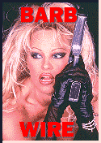

Contents | Features | Reviews | News | Archives | Store |
 |
|
| Movie Credits | Buy It! |
Barb Wire
Review by Carrie Gorringe
 |
Directed by David Hogan. Starring Pamela Anderson Lee, Based on the comic book series by |
Somewhere in the concept of Barb Wire, there existed the seed of a really good film, as the opening credits indicate. Under the credits the audience sees Ms. Lee swaying sinuously to music, photographed in a soft-focus, close-up manner reminiscent of any Playboy video that might come to mind (a fitting combination of genres, given Lee's former status as a Playmate and director Hogan's work in music videos). Indeed, the entire procedure is conducted at such a close range that my first response was to recall the tag line that Howard Hughes penned for his 1943 Western, The Outlaw: "What are the two reasons for Jane Russell's rise to stardom?." On the surface, Barb is fluffy and voluptuous; one could almost mistake her for one of those pectorally-enhanced and intellectually-challenged females so aptly described by Huxley as "pneumatic."
But this Barb Wire is exactly like her namesake: she's prickly, tough to cut through, and she'll cut you to pieces if you get entangled with her. She is a lady who demands respect; the lounge-lizard type who demands, with a leer, to be introduced to "the blonde with the guns" is inadvertently asking for truth in advertising. And, for Heaven's sake, don't try calling her "Babe." Her response to this particular form of loutishness is instinctive and to the point, preferably in the form of a stiletto heel or some other sharp implement implanted in some inconvenient portion of the offender's body. Most amazing of all is her ability to ride motorcycles, kickbox enemies to the ground and handle large automatic weapons while sporting thigh-high boots with high heels and a black-leather merry widow; under the sartorial circumstances, it's a miracle that she can draw a steady breath.
But louts are the least of Barb's concerns in the year 2017, for she lives in the last bastion of freedom in the United States, Steel Harbor, an area divided into various sectors run by warlords; its urban planning looks as if it were designed by slumlords and built by oil companies. In a word, this place is grim. The Second Civil War is currently raging, between a dictatorship, called, oh-so-felicitously, the "Congressional Directorate" and a group of resistance fighters. It is a world in which a person's I.D. is determined by retinal scanners. The Directorate has developed a virus which promises to rid it of the last of the resistance fighters. Unfortunately for the Directorate, one of its chief scientists, Cora Devonshire (Rowell), has defected to the other side. Worse, she carries the antibodies for the virus in her DNA code, and is on her way to refuge in Canada. Dr. Devonshire and her husband, Axel Hood (Morrison) are in pursuit of some black-market retinal lenses that will allow her to evade the retinal scanners at the airport. Barb's secret life as a bounty hunter (officially, she runs an establishment called "The Hammerhead", which is not unlike a Studio 54 for the post-apocalyptic set) brings her into conflict with Hood, who, in a most unamazing coincidence, was the love of Barb's life when she was a resistance member. Now the question is whether Barb can overcome her bitterness in order to rise to the occasion and to defeat the power-mad sadist, Colonel Pryser (Railsback), who has been sent after Cora D.
As stated earlier, Barb Wire had all of the right elements to be a great film, not least of which is the cynical and campy quality so characteristic of cult work, and Pamela A. Lee herself, who can most certainly fill more than the shoes of Barb's physical appearance with ease. Despite the obvious temptation to place the blame on casting Lee in the title role, such an accusation would be without merit. Lee has the ability to carry a film on her muscular yet graceful shoulders; the two adjectives can also be applied to a description of Lee's acting style. Lee also has a really good sense of timing when delivering her lines; only rarely does she miss her cues, and the misses aren't so far out of range that they're glaringly obvious. With some work, and some careful career planning, it's not too much of an exaggeration to say that, Lee could have a fairly substantial Hollywood career (anyone who wants to snicker in disbelief at the last statement should look at some of Harrison Ford's unbearably wooden performances from the early 1970s; if he could improve to the point of becoming one of Hollywood's $20 million-dollar men, Lee can easily become a star in her own right, not least of all because she doesn't have as far to go as Ford did). Likewise, the other members of the cast are equally effective in their supporting roles, though Railsback does tend to push the scenery-chewing beyond credibility at the most inconvenient moments, thereby undercutting the effectiveness of what should have been a hair-raising finale.
What really weakens Barb Wire beyond repair is the uneasy tone established by the filmmakers from the very beginning between the demands of the character and the demands of the genre; they aren't certain whether or not to emphasize the sexiness of Barb, or concentrate upon the grittiness of a world torn apart by war, so they alternate between soft-core porn (a genre characterized by utopian fantasies of sexual potency in perpetuity) and dystopia. The displays of T & A isn't necessarily redundant to the film, or even offensive -- after all, the contradiction between Barb's almost hyperfantastic sexuality and her brutality is presumed to be intrinsic -- but the soft-focus approach favored by Hogan when sex is being emphasized makes the awkwardness of mixing utopian and dystopian motifs even more apparent. One is left with the impression that there was a need to ensure that Barb's more "feminine" side could cancel out some of her more "masculine" exploits. Whether this bizarre decision was the result of latent sexism, a lack of confidence in the script, a lack of confidence from the director (this being his first feature film), or, worse, a lack of confidence in Lee herself is hard to trace conclusively. Regardless of the source of the problem, the dismal result on-screen is hard to avoid.
The one wonderful characteristic of pulp fiction stemmed from the fact that, no matter how yellow the pages, one could usually count on obtaining some sort of cheap thrill. Unfortunately, Barb Wire, for all of its obviously expensive production values, doesn't even come close to this meager ideal.
Contents | Features | Reviews | News | Archives | Store
Copyright © 1999 by Nitrate Productions, Inc. All Rights Reserved.